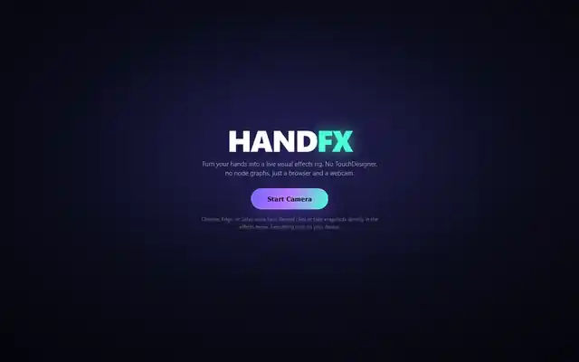
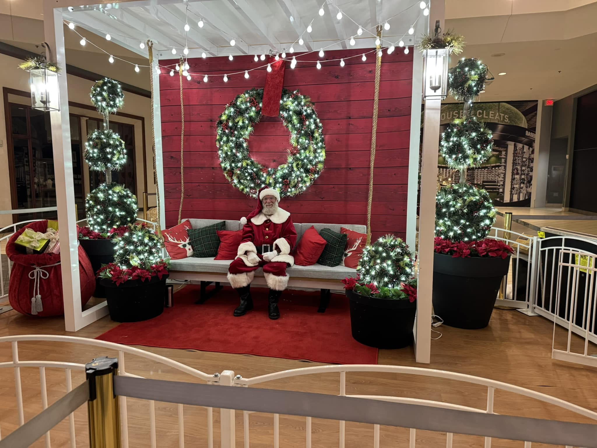

Pressure washing / Local service
Ascension Wash & Geaux
Built around visual proof, fast quote requests, and before-and-after work that sells the service before the customer ever makes a call.
View live site ↗Independent web design and development
SideQuest Creative makes custom websites for local businesses, creators, and big ideas. Clean enough to feel professional. Distinct enough to be remembered.
The brief
Strategy, design, development, motion, forms, booking flows, deployment, and the details that make a site feel finished.
Selected work / 01
I do not want every client site to look like it came from the same template. The visual direction changes with the business, but the goal stays the same: make it clear, memorable, and easy to use.
Pressure washing / Local service
Built around visual proof, fast quote requests, and before-and-after work that sells the service before the customer ever makes a call.
View live site ↗
Interactive experience
A browser experience that reacts to webcam hand movement with real-time effects, recording tools, and a UI that feels more like a product than a brochure.
View live site ↗
Events / Booking
A warm, photo-led site designed around real event moments, visit types, trust, and a booking path that can grow into a full scheduling system.
View live site ↗
Entertainment / Editorial
A multi-page fan experience with a richer editorial feel, crew stories, timeline content, and cinematic motion that keeps the site moving without turning it into a slideshow.
View live site ↗
Lawn care / Property services
A service-first build with real project media, clear coverage, and a more polished path from browsing the work to requesting an estimate.
View live site ↗
Lawn care / Local business
A straightforward local-service site that makes the work easy to understand, the coverage easy to find, and the estimate request easy to start.
View live site ↗Creative lab / 02
Client work proves I can solve a business problem. These projects show how far the design, motion, world-building, and interface work can go when the brief is simply: make something memorable.

Interactive maps, character and dragon systems, ravens, ranks, and a full visual world built around one fictional campaign.
Enter project ↗
A playable fantasy interface with combat, character systems, world progression, and game-like UI built directly for the browser.
Enter project ↗Capabilities / 03
A visual system that fits the business instead of forcing every project into the same template.
Layouts and interactions designed to feel intentional on phones, tablets, laptops, and large screens.
Transitions, hover states, reveals, media, and small details that add energy without getting in the way.
Quote requests, contact forms, booking flows, galleries, service pages, and the pieces that help turn visits into action.
The process / 04
No handoff maze. You work directly with me through the whole build.
We figure out what the business does, who the site is for, and what needs to happen when someone lands on it.
I shape the look, layout, content hierarchy, and experience around your photos, brand, and goals.
The site gets developed, animated, tested, and refined across screen sizes with the real content in place.
I connect hosting and the domain, make sure the important pieces work, and get the finished site out into the world.
Start a project / 05
Send me the basics. I will come back with questions, ideas, and a sensible next step instead of a giant sales pitch.
Email directlythomasdbiz26@gmail.com ↗